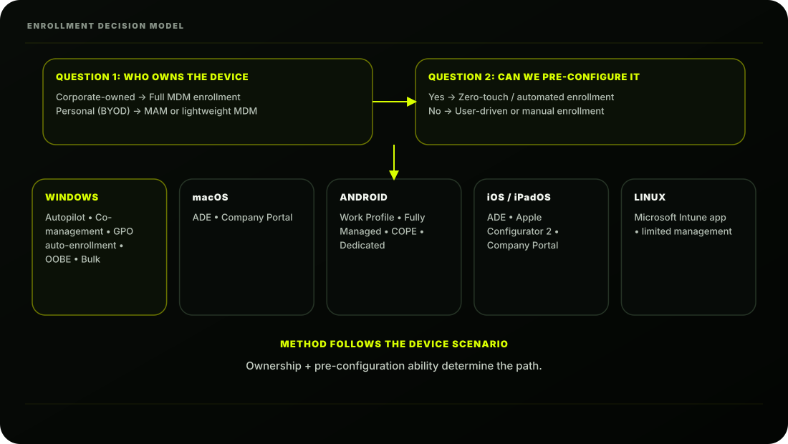
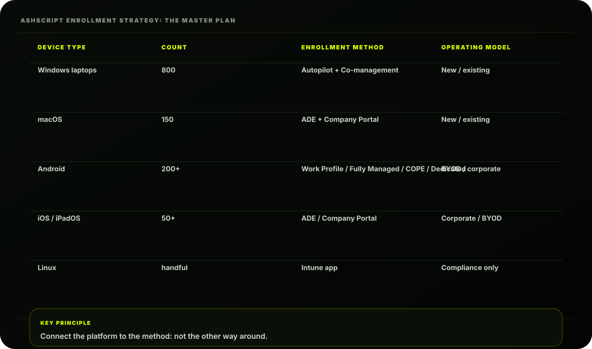

The Scene
It's Monday morning. The IT room at AshScript looks like a delivery warehouse. Fifty brand-new
Windows laptops in boxes. A pallet of MacBooks arriving Wednesday. Two hundred Android phones
already in use by the Sales team. Executives with iPhones. A handful of Linux machines in the Dev
team. And every employee's personal phone quietly accessing company email.
Riya stands in the doorway:
"Ashpak, I need all of this managed. Every device. Every platform. But here's the constraint; we
have four IT staff, 1,000 users, and I will not allow a process that requires someone to physically
touch every machine. Whatever you build must scale."
Ashpak looks at the room. Then he opens his laptop and pulls up a diagram he's been preparing all
weekend; AshScript's Device Enrollment Master Plan.
What is Device Enrollment?
Before a device can be managed by Intune; before policies apply, before apps deploy, before
compliance is checked; the device must be enrolled.
Enrollment is the process by which:
The MDM certificate is what makes this happen. When a device enrolls, Intune issues it an MDM
certificate. This certificate is the device's proof of identity; it's how Intune knows the device is
managed and how policies are securely delivered.
The Enrollment Landscape: Every Method
There is no single enrollment method. Microsoft has built different methods for different platforms
and scenarios. Here is the complete map:
This looks complex; but it becomes logical once you understand the two questions that determine
which method to use:

| Platform | Enrollment methods |
|---|---|
| Windows | Windows Autopilot (zero-touch) • Co-management (SCCM + Intune) • Entra join during OOBE (manual) • Group Policy auto-enrollment • Bulk enrollment (provisioning package) |
| macOS | ADE - Automated Device Enrollment (Apple) • Company Portal (manual) • Direct enrollment (no user affinity) |
| iOS/iPadOS | ADE - Automated Device Enrollment • Apple Configurator 2 • Company Portal (BYOD) |
| Android | Android Enterprise - Work Profile (BYOD) • Android Enterprise - Fully Managed (COBO) • Android Enterprise - COPE • Android Enterprise - Dedicated (Kiosk) • Samsung Knox Mobile Enrollment |
| Linux | Microsoft Intune app (manual) • Limited management; growing feature set |
Windows Enrollment Methods: Deep Dive
Windows is AshScript's primary platform; 800 of the 1,000 devices are Windows. Getting this right is
critical.
Method 1: Windows Autopilot Recommended: (Primary Method for New Devices)
What it is: A cloud-based zero-touch deployment service. You register a device's hardware hash with
Autopilot. When the user turns the device on for the first time, it recognises itself, downloads the
Intune configuration, and self-provisions; no IT involvement needed.
- Best for: New corporate Windows devices AshScript use: All 50 new laptops; this is
exactly what Riya asked for × Not for: Existing enrolled devices, BYOD, macOS/Android
Method 2: Co-Management (SCCM + Intune) Recommended: (Primary Method for Existing Devices)
What it is: A transition method that allows SCCM-managed devices to be simultaneously managed
by both SCCM and Intune. You choose which workloads each tool handles.
- Best for: AshScript's existing 750 SCCM-managed Windows laptops AshScript use:
Migration path for current fleet × Not for: New devices (use Autopilot instead)
Method 3: Group Policy Auto-Enrollment
What it is: An AD Group Policy that automatically enrolls existing domain-joined Windows 10/11
devices into Intune without user interaction.
- Best for: Bulk enrolling existing domain-joined PCs AshScript use: Enrolling the existing
750 laptops alongside co-management × Not for: New devices, non-domain-joined devices
Method 4: Entra Join During OOBE (Manual)
What it is: During Windows setup (Out-of-Box Experience), the user signs in with their work account.
The device Entra-joins and auto-enrolls in Intune.
- Best for: Small deployments where IT hands the device to the user × Not scalable; user
must do this step themselves × AshScript's position: Used only as a fallback, not primary
method
Method 5: Bulk Enrollment (Provisioning Package)
What it is: Create a provisioning package (.ppkg file) using Windows Configuration Designer. Copy
it to a USB drive or network share. Run it on multiple devices to batch-enroll them.
- Best for: Shared devices, kiosks, devices without internet during setup × AshScript use:
Only for kiosk scenarios in the warehouse
macOS Enrollment Methods: Deep Dive
AshScript has 150 macOS devices; primarily used by designers, developers, and executives.
Method 1: ADE (Automated Device Enrollment) Recommended: Primary
What it is: Apple's enterprise program (formerly DEP; Device Enrollment Program). Devices are
registered in Apple Business Manager (ABM) and automatically enroll in Intune when first turned on.
- Best for: All corporate macOS devices bought through Apple Business Manager
AshScript use: All 150 corporate Macs Warning: Requires: Apple Business Manager setup + MDM
token in Intune (covered in Lesson 3.4)
Method 2: Company Portal (Manual macOS Enrollment)
What it is: User downloads the Intune Company Portal app from the Mac App Store and signs in with
their work account to enroll the device.
- Best for: Existing Macs not purchased through ABM AshScript use: Any existing
MacBooks already in use before ABM was set up × Less automated than ADE; user must take
steps
Android Enrollment Methods: Deep Dive
AshScript has 200 Android devices; mostly Samsung phones used by the Sales team.
Android enrollment is the most complex; Microsoft and Google have built multiple profiles for
different ownership and use scenarios:
Method 1: Android Enterprise Work Profile (BYOD) Recommended:
What it is: Creates a separate encrypted container on the user's personal Android phone. Work
apps and data live in the work profile. Personal apps and data remain completely separate and private.
- Best for: BYOD; employees using personal phones for work AshScript use: Personal
phones requesting company email access Privacy: IT cannot see personal apps or data
Method 2: Android Enterprise Fully Managed (COBO) Recommended:
What it is: Company-Owned, Business-Only. The device is entirely managed by Intune. No personal
use. Used for corporate-owned phones dedicated to work.
- Best for: Corporate-owned phones issued to employees (no personal use) AshScript use:
Sales team's 200 corporate Samsung phones
Method 3: Android Enterprise COPE (Corporate-Owned, Personally Enabled)
What it is: Like Work Profile but on a company-owned device. The company owns the device and can
fully manage it, BUT the user also gets a personal profile for limited personal use.
- Best for: Company phones where some personal use is permitted AshScript use:
Executive mobile phones
Method 4: Android Dedicated (Kiosk)
What it is: Single or multi-app kiosk mode. The device runs only specific apps; locked down for a
specific purpose.
- AshScript use: Warehouse inventory scanners (future phase)
iOS/iPadOS Enrollment
AshScript executives use iPhones. The methods mirror macOS:
Supervised vs Unsupervised: ADE-enrolled iOS/macOS devices are supervised; giving Intune
deeper control (silent app install, lost mode, more restrictions). Personally enrolled devices are
unsupervised; limited management.
Linux Enrollment
Linux support in Intune is growing but limited compared to other platforms:
- AshScript use: Developer team's Linux machines; basic compliance + CA only
Prerequisites Before Any Enrollment Happens
Before Ashpak can enroll a single device, certain connectors and certificates must be configured in
the Intune portal:
We'll set up each prerequisite in the relevant lesson. For now, understand that you must connect
Intune to Apple and Google before their devices can be managed.
| Platform | Prerequisite |
|---|---|
| All platforms | MDM Authority = Intune (Done in Lesson 1.4) |
| Windows Autopilot | Devices registered in Autopilot • Enrollment Status Page configured |
| macOS + iOS | Apple MDM Push Certificate • Apple Business Manager account • ADE token from ABM |
| Android | Managed Google Play account • Connected to Intune tenant |
| Co-management | SCCM version 1710 or later • Cloud Management Gateway (CMG) • Co-management enabled in SCCM |
AshScript's Enrollment Strategy: The Master Plan
Here's the plan Ashpak presents to Riya:

Enrollment Restrictions: Controlling What Can Enroll
Before opening the gates, Ashpak needs guardrails. Enrollment Restrictions let him control exactly
what is allowed to enroll:
Two types of restrictions:
AshScript's Current State After Lesson 3.1
| State | Status |
|---|---|
| Phase 2 complete | Identity foundation solid |
| Enrollment strategy designed | ✓ Complete |
| Enrollment restrictions configured | ✓ Configured |
| Enrollment method per platform decided | ✓ Decided |
| Autopilot | Not yet configured (Lesson 3.2) |
| Apple MDM Push Certificate | Not yet added |
| Google Play | Not yet connected |
| Co-management | Not yet configured |
| Devices enrolled | None yet |
Key Concepts to Lock In
| Concept | Remember This |
|---|---|
| Enrollment purpose | Establishes MDM management via certificate |
| Two key questions | Who owns the device? Can we pre-configure before delivery? |
| Autopilot | Zero-touch Windows deployment |
| Co-management | Transition path from SCCM to Intune |
| ADE | Zero-touch Apple enrollment via Apple Business Manager |
| Work Profile | BYOD container for personal Android |
| Fully Managed Android | Corporate-owned work-only phone |
| COPE | Corporate-owned with personal use |
| Android Dedicated | Kiosk / shared-device mode |
| Apple prerequisites | Push certificate + ABM + ADE token |